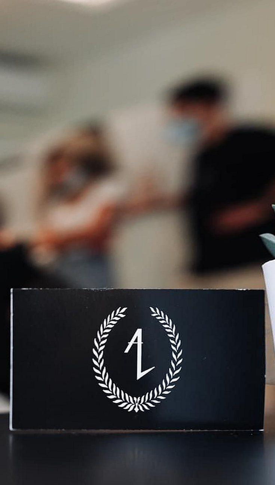
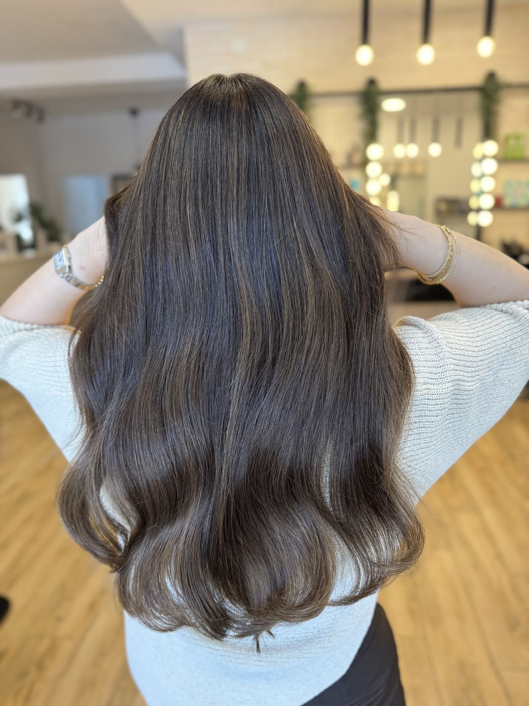
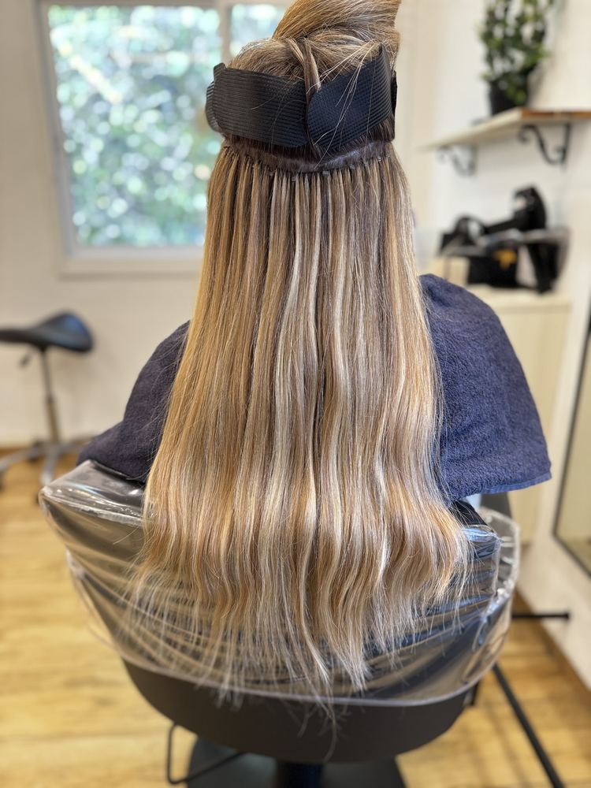
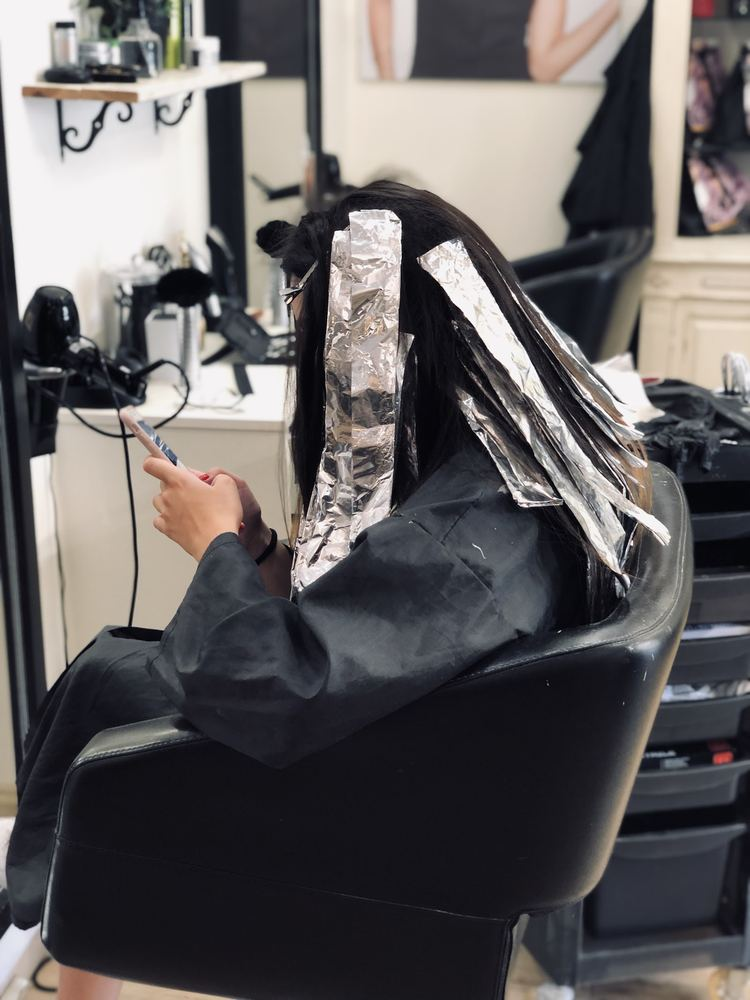
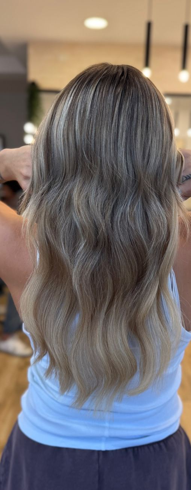
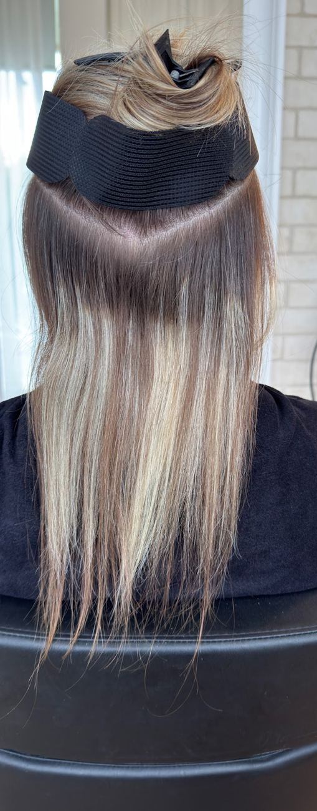
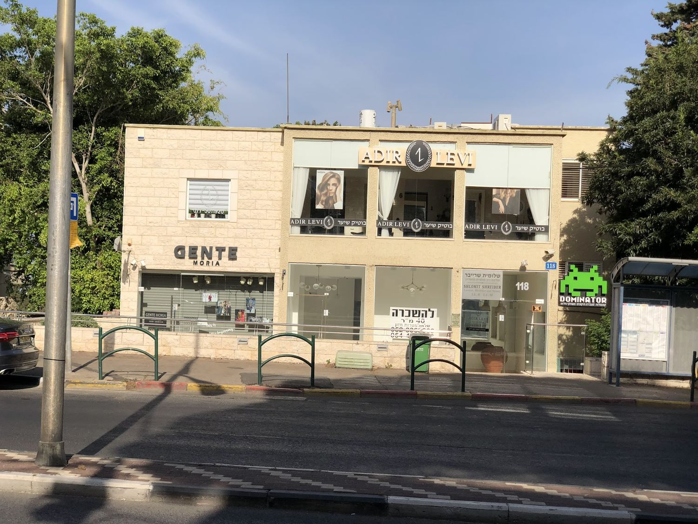

השיער שלך,Your hair, בגוון שלך.in your shade.
בוטיק השיער של אדיר לוי ושרון לוי, בשדרות מוריה 118. תספורת, גוונים, תוספות ופן.Adir Levi and Sharon Levi’s hair boutique, at 118 Moriah Blvd. Cuts, colour, extensions and blowouts.

מתוך התמונות של המספרהFrom the salon’s own photos
מהכיסא, אל המראה.From the chair, to the mirror.
עבודות של אדיר ושרון, מהעמוד של המספרה בגוגל.Adir and Sharon’s work, from the salon’s Google page.



גוונים שאפשר כמעט לגעת בהם.Shades you can almost touch.
העבירו את היד על השיער.געו בשיער, או גללו.Run your hand through the hair.Touch the hair, or scroll.
דוגמיות של תוספות שיער, מתוך התמונות של המספרהHair-extension samples, from the salon’s own photos
לפני. ואחרי.Before. And after.
כפי שהמספרה פרסמה בגוגל. גררו את הקו.As the salon posted it on Google. Drag the line.

אדיר ושרון, בוטיק אחד.Adir and Sharon, one boutique.
4.9
228 ביקורות בגוגלGoogle reviews
”אדיר מוכשר וצנוע, בשקט שלו המליץ לי על הגוונים וקו התספורת.“
“Adir is talented and modest; in his quiet way he recommended the shades and the line of the cut.”

שדרות מוריה 118118 Moriah Blvd
היומן של המספרה.The salon’s diary.
בוחרים טיפול ושעה, וההודעה לוואטסאפ נכתבת לבד.Pick a service and a time, and the WhatsApp message writes itself.
- 1איזה טיפולWhich service
- 2יום ושעהDay and time
- 3שולחים בוואטסאפSend on WhatsApp
4.9, מ-228 ביקורות.4.9, from 228 reviews.
Googleלכל הביקורותRead them all”אדיר קיבל אותי בכזו אדיבות ומקצועיות, דאג לתיאום ציפיות מאוד ברור וסיפר אותי פשוט מושלם!!! […] אין ספק שמצאתי את מעצב השיער שלי.“
“Adir welcomed me with such kindness and professionalism, made sure our expectations were very clear and gave me a simply perfect cut!!! […] No doubt, I’ve found my hair stylist.”
”אין מילים!!!!! מקום מהמם נקי אנשים מקסימים עובדים מכל הלב אני מרוצה ברמות.“
“No words!!!!! A gorgeous, clean place, lovely people who work with all their heart, I’m so happy.”
”היום פעם ראשונה הייתי במספרה של אדיר ובטוח שאחזור. הוא ושרון מאד סבלנים, ומקצועיים […] מאד ממליצה.“
“Today was my first time at Adir’s salon and I’ll definitely be back. He and Sharon are very patient, and professional […] Highly recommended.”
”אדיר עשה עבודה שהיא לא פחות מקסם […] קיבלתי אינסוף מחמאות על התספורת. […] אני יודעת שמצאתי את הספר שלי.“
“Adir did work that was nothing short of magic […] I got endless compliments on the cut. […] I know I’ve found my hairdresser.”
”הפעם הראשונה שאני יוצאת מרוצה ומאושרת עם התוצאה. אדיר מוכשר וצנוע […] חוויה מהנה ומוצלחת מרגע הכניסה. אשוב כמובן!“
“The first time I’ve walked out happy with the result. Adir is talented and modest […] A lovely experience from the moment you walk in. I’ll be back, of course!”
”אדיר ושרון הם באמת אנשים יוצאי דופן!!! […] ובכל כך הרבה סבלנות.“
“Adir and Sharon really are exceptional people!!! […] And with so much patience.”
רגע, לפני התור.A moment, before you book.
מה עושים במספרה?What does the salon do?
תספורת, גוונים, תוספות שיער ופן.Cuts, colour, hair extensions and blowouts.
איך קובעים תור?How do I book?
בטלפון 054-485-1412, או בוואטסאפ לאותו מספר.By phone on 054-485-1412, or on WhatsApp at the same number.
מתי המספרה פתוחה?When is the salon open?
ראשון, ושלישי עד חמישי 9:00–17:00. שישי 8:00–13:00. בימי שני ושבת המספרה סגורה.Sunday, and Tuesday to Thursday 9:00–17:00. Friday 8:00–13:00. Closed Monday and Saturday.
איפה המספרה?Where is it?
שדרות מוריה 118, חיפה.118 Moriah Blvd, Haifa.
נתראה בשדרות מוריה.See you on Moriah Blvd.
וואטסאפWhatsApp054-485-1412 טלפוןPhone054-485-1412 ניווטDirectionsשדרות מוריה 118, חיפה118 Moriah Blvd, Haifaשעות פתיחהOpening hours